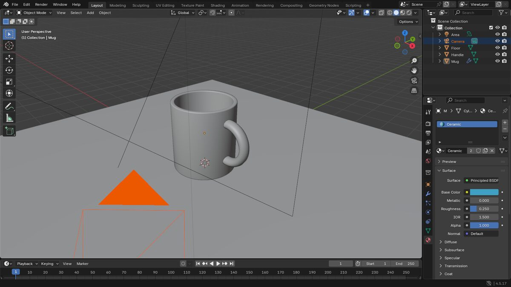

Lesson 10 of 10
Mug Material and Final Render
Give the mug a ceramic material, set up the scene and render the finished image.
This lesson combines what you learned in Lessons 4, 5 and 6, and finishes the mug project.
1. A ceramic material
- Click the Mug, open the Material tab and click New. Rename the material to Ceramic.
- Set Base Color to a blue you like and Roughness to
0.25. A lower roughness makes a shinier, glazed look. - Click the Handle, and in its Material tab pick the same Ceramic material from the list (the sphere icon next to New) so both parts match.

2. Floor, light and camera
As in Lesson 5: add a Plane as the floor and scale it up, add an Area light above and to one side of the mug, and move the view until the mug looks good. Press Ctrl + Alt + Numpad 0 to put the camera at that angle. Adjust the light Power until the picture is bright enough.
3. Render
In the Render tab choose Cycles and set Samples to 32 (use more for a cleaner image). In the Output tab set the resolution. Press F12 to render, then choose Image > Save As to save the picture.
The result

That is the second project done. You made a mug from a cylinder with modifiers, added a torus handle and rendered it.
Exercise
Try a different color, a rougher material (Roughness 0.8) and a different camera angle, and render again to compare.